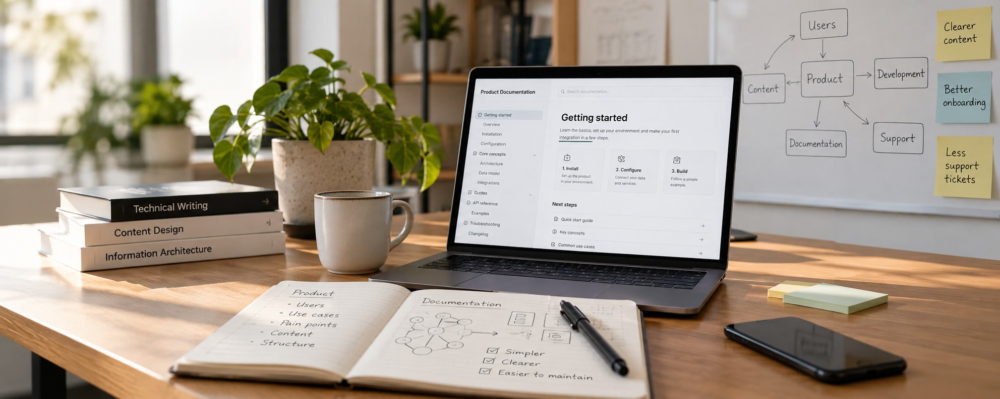
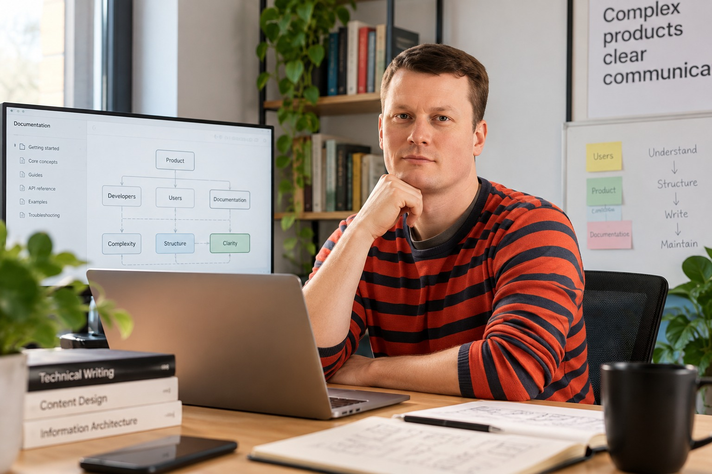

Dokumentacja od zera
Dostajesz strukturę i treści, dzięki którym użytkownik może zrozumieć produkt bez ciągłego pytania Twojego zespołu o pomoc.

Pomagam firmom uporządkować dokumentację i komunikację wokół skomplikowanych produktów – od technical writingu po content design.
Dla startupów, małych firm i dużych organizacji rozwijających software, hardware i złożone usługi.
Umawiam rozmowęPo kliknięciu przejdziesz do kalendarza i wybierzesz dogodny termin.
Connected Dots jest dla zespołów, które mają dobry, ale skomplikowany produkt i coraz trudniej jest im dobrze wytłumaczyć go użytkownikom.
Jeśli brzmi to znajomo, nie zawsze trzeba pisać wszystko od nowa. Najpierw trzeba sprawdzić, co właściwie nie działa.
„Mamy mnóstwo dokumentacji, ale nikt już nad nią nie panuje.”
„Nasz produkt urósł, a dokumentacja za nim nie nadążyła.”
„Developerzy piszą dokumentację, ale potrzebujemy kogoś, kto zajmie się nią całościowo.”
„Nasz produkt jest skomplikowany i trudno nam dobrze wytłumaczyć użytkownikom, jak z niego korzystać.”
„Dokumentacja mówi jedno, interfejs drugie, a onboarding jeszcze coś innego.”
Dziś
Dokumentację piszą developerzy, kiedy znajdą na to czas.
Po współpracy
Zespół techniczny może skupić się na produkcie, a dokumentacją zajmuje się ktoś, kto patrzy na nią całościowo.
Dziś
Treści jest dużo, ale trudno się w nich odnaleźć.
Po współpracy
Użytkownik łatwiej dociera do informacji, której potrzebuje.
Dziś
Produkt rozwijał się szybciej niż jego dokumentacja.
Po współpracy
Dokumentacja ma strukturę, którą można dalej rozwijać razem z produktem.
Dziś
Trudno wytłumaczyć użytkownikowi skomplikowany produkt.
Po współpracy
Produkt mówi do użytkownika prościej – w dokumentacji i interfejsie.
Dostajesz strukturę i treści, dzięki którym użytkownik może zrozumieć produkt bez ciągłego pytania Twojego zespołu o pomoc.
Nie zaczynam od wyrzucania wszystkiego do kosza. Sprawdzam, co działa, co przeszkadza użytkownikom i co warto uporządkować.
Porządkuję komunikację również tam, gdzie użytkownik faktycznie korzysta z produktu – w interfejsie i podczas onboardingu.
Jeżeli nie wiesz jeszcze, czego potrzebujesz, zaczynamy od diagnozy. Dostajesz obraz obecnej sytuacji i propozycję dalszych działań.
Nie zajmuję się copywritingiem sprzedażowym, prowadzeniem social mediów ani tłumaczeniami.
Nie chcę pokazywać tylko gotowych tekstów. Każdy case pokazuje problem, moją rolę, wykonaną pracę i efekt.

(do uzupełnienia)
Moja rola(do uzupełnienia)
Co zrobiłem(do uzupełnienia)
Efekt(do uzupełnienia)
(do uzupełnienia)
Moja rola(do uzupełnienia)
Co zrobiłem(do uzupełnienia)
Efekt(do uzupełnienia)
(do uzupełnienia)
Moja rola(do uzupełnienia)
Co zrobiłem(do uzupełnienia)
Efekt(do uzupełnienia)
01
Klikasz „Umawiam rozmowę” i wybierasz termin.
Rozmawiamy o produkcie, użytkownikach i o tym, co dziś nie działa.
02
Sprawdzam istniejące treści, dokumentację i sposób pracy.
Ustalamy, co warto zachować, poprawić, przebudować lub stworzyć od zera.
03
Realizuję ustalony zakres i przekazuję gotowe treści oraz (sposób przekazania i utrzymania – do uzupełnienia).
Kilkanaście lat doświadczenia
W technical writingu, content designie i zarządzaniu zespołami dokumentacyjnymi.
Dlatego patrzę nie tylko na pojedynczy tekst, ale też na to, jak dokumentacja powstaje, kto za nią odpowiada i jak będzie później utrzymywana.
(do uzupełnienia)
(do uzupełnienia)
(do uzupełnienia)

Znam dokumentację z dwóch stron: jako osoba, która ją pisze, i jako lider zespołu, który musi nad nią zapanować.
Connected Dots stworzyłem po to, żeby pomagać firmom wtedy, gdy produkt robi się skomplikowany, treści przybywa, a samo „napiszmy więcej dokumentacji” przestaje być rozwiązaniem.
Stąd nazwa. Wiedza o produkcie jest zwykle rozproszona – w głowach developerów, w starych plikach, w interfejsie. Moja praca polega na tym, żeby połączyć te kropki w całość, którą użytkownik rozumie.
Mogę dołączyć do zespołu zdalnie, pracować hybrydowo albo pojawić się u klienta.
Pracuję przede wszystkim przy dłuższych projektach, w których mogę poznać produkt i rzeczywiście uporządkować jego dokumentację lub komunikację.
Rozliczenie: stawka godzinowa.
Stawka: (do uzupełnienia)
Minimalny zakres współpracy: (do uzupełnienia)
Nie musisz przed pierwszą rozmową wiedzieć, jak dużego projektu potrzebujesz. Ustalimy to na podstawie problemu i obecnego stanu dokumentacji.
Tak. Mogę zaprojektować jej strukturę i przygotować treści dla istniejącego lub rozwijanego produktu.
Nie. Najpierw sprawdzam, co już macie. Audyt pozwala ustalić, co warto zachować, poprawić, przebudować lub usunąć.
Tak. Mogę pracować bezpośrednio z zespołami technicznymi i produktowymi.
Nie. Mogę pracować zdalnie, hybrydowo albo na miejscu – zależnie od potrzeb projektu i zespołu.
Tak. UX writing i content design są częścią oferty Connected Dots.
To zależy od produktu, obecnego stanu treści i zakresu prac. Zaczynam od diagnozy, żeby ustalić, czego rzeczywiście potrzebujecie.
Nie musisz wiedzieć, czy potrzebujesz audytu, nowej dokumentacji czy przebudowy tego, co już masz. Opowiedz mi o produkcie i problemie. Od tego zaczniemy.
Pierwsza rozmowa: (do uzupełnienia – np. 30 minut, bezpłatnie, bez zobowiązań)
Kalendarz obsługuje serwis Cal.com. Rezerwując termin, przekazujesz mu swoje dane kontaktowe – szczegóły znajdziesz w polityce prywatności.
Wolisz najpierw napisać? E-mail: (do uzupełnienia) · LinkedIn: (do uzupełnienia)